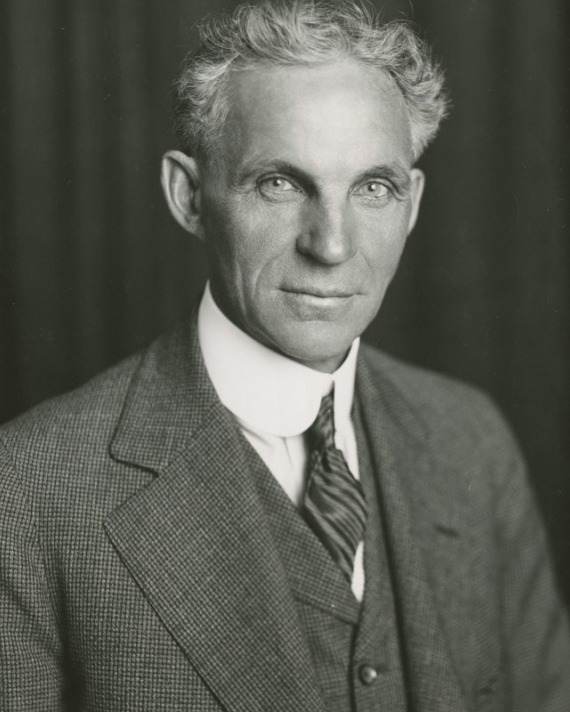

Trong lịch sử, không có nhiều công ty có ảnh hưởng đến nền văn minh nhân loại lớn như Công ty ô tô Ford. Chính kỹ sư cơ khí Henry Ford đã dẫn dắt một nhóm nhân tài sáng lập ra doanh nghiệp sản xuất ô tô với phương thức và quy mô sản xuất lớn, đưa cả thế giới công nghiệp vào thời kỳ hiện đại. Cuốn sách “Bí quyết thành công của Henry Ford” sẽ giúp chúng ta tìm hiểu Henry Ford và Công ty ô tô Ford đã làm thay đổi thế giới như thế nào, đồng thời giới thiệu với chúng ta quá trình phát triển và lớn mạnh cũng như cho chúng ta thấy được mặt vượt trội của Công ty ô tô Ford. Mỗi một chương trong cuốn sách đều xuất hiện một nhà phát minh kiệt xuất, kể cả Thomas Edison, nhiều nhà kinh doanh nổi tiếng...

.*
PHẦN I- CẬU BÉ TRANG TRẠI
I. NGUỒN GỐC
Henry Ford ra đời tại một trang trại nhỏ ở Springfield, bang Michigan. Thị trấn này nằm cách Detroit 10 dặm về phía Tây, sau này được sáp nhập vào thị trấn Dearborn. Ngày nay, Dearborn đã trở thành vùng ngoại ô của thành phố ô tô, dân số tập trung đông đúc với những đại lộ rực rỡ ánh đèn và con đường cao tốc 6 làn xe, từng dãy từng dãy những khu chung cư phát triển với một tốc độ nhanh chóng đang mọc lên trên vùng đất mênh mông này. Tuy vậy, vào năm Henry Ford ra đời (1863), Dearborn chỉ là một thị trấn nhỏ. Ở đó, những cánh rừng rậm rạp Nam Michigan thoai thoải xuôi về hướng Đông, mãi đến cuối chân trời mới thấy ống khói của nhà máy đầu tiên ở Detroit đang nhả khói lên bầu trời. Đi tiếp về hướng đông là khu vực của 5 hồ lớn, những con thuyền chở gỗ và nguyên vật liệu xuôi ngược trên sông, từ hồ Huron đến hồ Saint Clair, rồi từ sông Detroit đến hồ Erie và trung tâm công nghiệp ở khu Đông Bắc. “Trong thời kỳ nội chiến, ở khu vực giữa miền Tây, Detroit là một thành phố nhỏ thịnh vượng và hiếu khách. Thành phố chỉ có 45.000 dân, mặc dù có những bến cảng, cầu tàu, cửa hiệu và nhà máy nhỏ luôn bận rộn nhưng vẫn giữ được diện mạo của thời kỳ đầu. Ngoài ra, kinh tế của thành phố lệ thuộc khá nhiều vào rừng, mỏ quặng, đường sông và đường sắt.“ - Bruce Catton, nhà sử học đã viết như vậy trong cuốn sách “Michigan: Một giai đoạn lịch sử” (Michigan: A history).
Khi Henry Ford ra đời, trên bán đảo Keweenaw ở miền Tây Michigan có một lượng quặng đồng rất phong phú. Điều khiến các nhà tìm kiếm thêm phấn khích là họ còn phát hiện được trên bán đảo có một mạch quặng sắt khổng lồ và một khoảng rừng rậm rộng lớn. Henry Ford đã lớn lên trong những năm 70 của thế kỷ XIX, vào thời điểm đó Michigan là một khu vực xa xôi hẻo lánh, những hoạt động thương mại chỉ hướng về phía Đông, những người có con mắt nhìn xa trông rộng lại đầu tư vào vùng miền Tây rộng lớn chưa được khai thác. Có lẽ môi trường sống nơi đây đã có ảnh hưởng rất lớn đến Henry Ford.
May mắn là thị trấn Springfield đã cung cấp cho cậu thanh niên có chí hướng này “mảnh đất trung tâm” tốt nhất. Nơi đây ban đầu được xây dựng để làm trạm dừng chân, nằm trên con đường từ Detroit đến Chicago. Về phía Đông, một cỗ xe bò đi từ Detroit đến đây cũng phải mất một ngày đường. Về phía Tây, Chicago cách đó 269 dặm. Giống như hiện nay, vào thời điểm đó, Detroit là thành phố lớn thứ hai đứng sau Chicago. Vị trí địa lí giáp ranh với Dearborn đã khiến cho những tư tưởng mới của Detroit ảnh hưởng đến Dearborn từ lĩnh vực thời trang, vui chơi giải trí đến lĩnh vực chính trị và tiến bộ. Gia đình Ford là một trong những gia đình có tư tưởng tiên tiến nhất ở đây. Bởi vậy, dù Henry Ford lớn lên ở trang trại nhưng đó không phải là nơi để nuôi dưỡng những người nông dân. Trên thực tế, cha của Ford là William Ford đã từng có trong tay một trong những trang trại thành công nhất vùng.
Lịch sử phấn đấu của William Ford bắt đầu từ năm 1847 khi ông rời khỏi Ireland. Khi đó, ngoài việc di cư, ông và gia đình không còn lựa chọn nào khác. Trang trại rộng 23 mẫu Anh mà họ từng thuê có thể nuôi sống cả gia đình hơn 10 người, nhưng đến giai đoạn khó khăn vào năm 1845-1848, do không thanh toán được tiền thuê đất, giống như nhiều gia đình nông dân ở Ireland, họ phải rời bỏ tổ quốc. Điều may mắn là gia tộc Ford đã chọn nước Mỹ làm nơi gây dựng lại cơ nghiệp.
Năm 21 tuổi, William Ford cùng với cha mẹ là John và Thomasina và 6 anh chị em đã đi một chuyến tàu với giá vé thấp nhất vượt qua Đại Tây Dương đến Mỹ để tìm hai người chú là George và Samuel Ford. Từ năm 1832, hai người chú đã đến nước Mỹ và định cư ở gần Detroit. Trong vòng 15 năm sau đó, họ đã gửi thư về cho gia đình ở Ireland để ca ngợi sự tự do ở thế giới mới. Tuy vậy, dù viễn cảnh có tươi sáng đến đâu thì bi kịch cũng đã đến với gia đình Ford trên con đường đến Mỹ. Trong cuộc hành trình, Thomasina lâm bệnh và qua đời. Tang lễ của bà nội Henry Ford có lẽ đã được diễn ra trên biển.
Sau khi đến Michigan, họ dựng một căn nhà nhỏ trên mảnh đất của những người chú ở Springfield. Sau đó một năm, Henry, em của William đã gia nhập đội quân đào vàng ở California. Điều này khiến William rất đau lòng. Ông ở lại, tiếp tục gánh vác trách nhiệm của người anh cả. Tháng 1 năm 1858, cha của ông đã mua lại một mảnh đất rộng 80 mẫu Anh từ tay của một người đồng hương Ireland tên là Henry Maybury với giá 200 đô-la. Gia đình Ford đến Springfield đúng vào lúc bắt đầu thời đại khai thác nguyên liệu gỗ của Michigan. Từ những năm 40 đến những năm 90 của thế kỷ XIX, giá trị khai thác gỗ ở bang này đã vượt qua con số 1 tỉ đô-la, còn nhiều hơn số vàng khai thác được ở California. William nắm lấy cơ hội này, giúp cha thanh toán tiền cho số đất mà họ đã mua, sau đó ông kiếm được việc làm mộc ở công ty đường sắt trung ương Michigan.
Năm 1858, John Ford quyết định nghỉ ngơi, ông chia mảnh đất 80 mẫu Anh thành hai phần bán cho hai người con trai là William và Samuel. Cậu con trai cả rất tự hào khi có được một mảnh đất của riêng mình. Năm 1859, ông thậm chí còn treo tờ hóa đơn nộp thuế đất trong phòng ngủ của mình. Nhớ về cha mình khi đó, Margaret Ford Ruddiman đã nói: “Đối với ông, có một nơi có thể khiến cho một người đàn ông có được mảnh đất để làm việc và sinh sống quả là một kỳ tích của nước Mỹ”.
Xuất thân của Mary Litogot, mẹ của Henry Ford vẫn luôn mang một chút bí ẩn. Bà sinh năm 1839, lớn lên ở Wyon Dort, Michigan, là con gái duy nhất trong gia đình người thợ mộc William Litogot có 4 người con. Litogot có lẽ đến từ nước Bỉ, hoặc không phải nước Bỉ - Henry Ford thường nói rằng mẹ ông là người Hà Lan. Khi Mary mới 3 tuổi, William Litogot không may qua đời. Về nguyên nhân cái chết, có người nói rằng ông bị rơi từ trên mái nhà xuống, có người lại nói rằng ông bị ngã trên sông băng. Bốn đứa trẻ mồ côi đều tìm cho mình được một gia đình êm ấm. Nhất là Mary, bà đã trở thành niềm vui và niềm tự hào của cha mẹ nuôi là Patrick O'Hern và Margaret O'Hern.
Patrick O'Hern đến từ vùng Cork, Ireland, cách gia đình Ford vẻn vẹn 30 dặm. Khi gia đình Ford rời khỏi Ireland thì O'Hern cũng rời nhà gia nhập quân đội Anh. Sau đó ông đã trốn khỏi quân đội ở Quebec, Canada, đến định cư gần Detroit. Năm 1850, cũng là lúc Mary Litogot O'Hern vừa tròn 10 tuổi, William Ford đã bắt đầu lao động trên mảnh đất 91 mẫu Anh trị giá 1000 đô-la của cha. Sau này, vào một thời điểm ngẫu nhiên, chàng trai William Ford chợt nhận ra cô gái nhỏ có mái tóc nâu của nhà O'Hern đã trở thành một cô gái xinh đẹp. Ngày 25 tháng 4 năm 1861, cô gái nhà O'Hern 22 tuổi kết hôn với William khi đó 34 tuổi.
William Ford chuyển đến ở trong ngôi nhà mới mà ông cùng bố vợ dựng nên, bắt đầu làm việc ở trang trại của gia đình vợ. Hai vợ chồng O'Hern coi William như con đẻ, chưa đến 3 năm, họ đã chuyển nhượng lại cho William mảnh đất trị giá 1000 đô-la của mình. Một năm sau, William Ford kiếm được một món tiền trong một vụ mua bán đất. Ông đã bán mảnh đất 40 mẫu Anh mua lại của cha, giá 600 đô-la năm 1858 với giá 2500 đô-la. Tiếp đó, ông và vợ mua tiếp một mảnh đất 80 mẫu Anh giáp phía Tây, thêm vào đó là mảnh đất 40 mẫu Anh với giá 4100 đô-la ở phía Đông vào năm 1867, tổng diện tích đất của họ đã lên đến 211 mẫu Anh.
Đứa con đầu lòng của họ làm một cậu con trai, sinh năm 1862, nhưng tiếc là đứa trẻ đã chết khi còn rất nhỏ. Ngày 30 tháng 7 năm 1863, đứa trẻ thứ hai ra đời, hai vợ chồng William đặt tên con là Henry Ford. Một tháng trước khi Henry ra đời, trận chiến mang tính quyết định của cuộc chiến tranh Nam - Bắc đã diễn ra ở Pennsylvania. Trận chiến này đã biến nước Mỹ trở thành quốc gia thống nhất và ổn định. Cậu của Henry Ford là John Litogot đã hy sinh trong một trận chiến ở bang Virginia. Tuy vậy, tư tưởng của Henry Ford gần như không chịu ảnh hưởng gì quá lớn từ cuộc chiến tranh Nam - Bắc. Sau này ông còn nói một cách rất nghiêm túc rằng, sự kiện lớn nhất trong thời kỳ chiến tranh Nam - Bắc chính là việc cha ông mua một chiếc máy cắt cỏ để từ đó, hiệu suất sản xuất của trang trại đã tăng lên 10 lần.
Dù William Ford rất muốn truyền lại cho cậu con trai cả tình yêu đối với đất đai nhưng Henry Ford chẳng hề hứng thú với cuộc sống nông thôn và sự lao động vất vả của những người nông dân. Tuy vậy, trang trại, đặc biệt là những trang trại lấy hiệu suất làm đầu, có thể nói là những phòng thí nghiệm tự nhiên của Henry Ford. May mắn là người cha đã cho cậu con trai có đủ không gian và được sử dụng những công cụ của trang trại để làm những việc mình thích. Giống như Margaret đã nói: “Mỗi khi chúng tôi nhận được những món quà giáng sinh có kết cấu như máy móc, chúng tôi đều nói: ‘Đừng để Henry nhìn thấy chúng, nếu không chúng sẽ bị tháo ra thành từng mảnh’.”
Henry Ford luôn được cha mẹ nuông chiều. Mary Litogot Ford đã đặt cho Henry Ford một chiếc bàn làm việc ở gian bếp để cậu có thể sửa lại những đồ chơi mà những đứa trẻ khác đã làm hỏng hoặc làm một số công việc có ích khác. Bà quả là một người có óc hài hước. “Chính bà đã làm cho gia đình trở thành một nơi thật tốt đẹp” - Henry Ford vào năm 60 tuổi đã nói như vậy khi nhớ về người mẹ kính yêu của mình.
Henry Ford luôn mang theo người một quyển sổ tay nhỏ, trong đó ghi lại những câu cách ngôn mà ông đã học được từ mẹ khi còn nhỏ. Trong một lần trả lời phỏng vấn về bí quyết thành công của mình, ông đã nói: “Tôi luôn nỗ lực sống như mẹ tôi vẫn hằng kỳ vọng nơi tôi”.
Rất nhiều người quen biết Henry Ford từ nhỏ đã chứng thực rằng, những điểm chứng tỏ sự thiên tài, khuynh hướng cũng như những khiếm khuyết của Ford được bộc lộ ngay từ nhỏ. Bởi vậy, ông nhận được sự đối xử khá đặc biệt của những người thân trong gia đình “Cha mẹ cho phép anh ấy dậy muộn”, Margaret nói: “Cũng chẳng có lý do gì đặc biệt, chỉ vì anh ấy còn đang ngủ. Tất cả lũ trẻ đều đã dậy và đi làm công việc của mình, chỉ có anh ấy là vẫn nằm trên giường”. Nhưng một nỗi bất hạnh đã giáng xuống cuộc đời hạnh phúc của Henry Ford. Ngày 29 tháng 3 năm 1876, 12 ngày sau khi sinh đứa con thứ tám, mẹ của Henry Ford đã qua đời khi mới 37 tuổi. Năm đó Henry chưa đầy 13 tuổi. “Như vậy là quá bất công đối với tôi”, Henry nói. Ông viết: “Sau khi mẹ mất, gia đình giống như một chiếc đồng hồ không có dây cót”.
Ba năm sau, Henry lúc đó 15 tuổi rời trường học, từ bỏ con đường đến với cánh cổng trường Phổ thông trung học và Đại học. Ngày 1 tháng 12 năm 1879, ông đến Detroit, bắt đầu tìm kiếm giấc mơ cơ khí của mình. “Khi Henry lần đầu tiên rời khỏi trang trại, ông đã có nhận thức về sự mạo hiểm” - nhà văn Sidney Olson viết - “Nhưng trên thực tế, ông lại được an toàn như ở trong giáo đường. Ông ở cùng Rebecca Flaherty, người cô mà ông yêu quý nhất, còn Jane, con gái của Rebecca lại đang chăm sóc gia đình William Ford. Trang trại vẫn luôn là một hậu thuẫn an toàn ở phía sau Henry, cha ông đã chuẩn bị sẵn sàng cho ông một mảnh đất để trở thành một người nông dân”.
Henry Ford ở nhà của chị cả của cha, ông nhanh chóng tìm được một công việc ở Nhà máy công ty ô tô Michigan, chuyên sản xuất xe điện chạy trên đường ray. Tuy vậy, ngay sau đó 6 ngày ông bị đuổi việc, lý do cho đến giờ vẫn là một bí mật. Từ đó về sau Ford luôn trốn tránh câu hỏi này, chỉ để lại một ám thị khiến người ta nửa tin nửa ngờ: Sự thành thục quá sớm của ông trong công nghệ cơ khí đã xúc phạm đến những người công nhân có kinh nghiệm hơn ông.
Cho dù nguyên nhân là gì thì lần thất bại đầu tiên này không có gì ghê gớm. Ford, dưới sự giúp đỡ của cha đã tìm được một công việc mới. William giới thiệu Ford đến học việc ở nhà máy cơ khí James Flower Brothers. Đây là nhà máy chuyên thiết kế và sản xuất những chi tiết máy bằng đồng và sắt, ông chủ và cha của Ford rất thân với nhau. Tuy nhiên, thu nhập cho một tuần làm việc 60 tiếng của Ford chỉ có 2,5 đô-la, mà tiền trọ và tiền ăn lại cao hơn 1 đô-la so với thu nhập, điều này buộc Henry phải tìm thêm một công việc làm đêm: sửa chữa đồng hồ cho một nhà buôn đá quý ở địa phương. Đó là cơ hội để Henry tìm hiểu các loại van, ống hơi, đồng hồ tín hiệu, trụ cứu hỏa cùng các linh kiện của hệ thống cung cấp nước và các sản phẩm khác mà nhà máy cơ khí James Flower's Brothers sản xuất.
Trong số những người bạn học việc cùng với Ford có một cậu bé 10 tuổi tên là Frederick Strauss. Hai cậu bé đều có chung khát vọng, nhưng điều làm họ thất vọng là họ chẳng học được gì nhiều. Dù toàn bộ các thiết bị máy móc ở nhà máy có thể khiến nó hoàn thành được các công việc từ thiết kế bản vẽ ban đầu cho đến đúc và gia công hoàn chỉnh các chi tiết, nhưng Ford lại không hiểu được bao nhiêu về quy trình đó bởi cậu chỉ có thể đứng bên chiếc máy của mình mà thôi.
Tài năng của Henry giúp ông hoàn thành bất cứ một công việc gì chẳng mấy khó khăn. Ông luôn đi lại trong nhà máy, không ngừng đưa ra các câu hỏi với những người công nhân có kinh nghiệm hơn để cố gắng học lấy điều gì đó, bất luận là người ta đang làm gì. Khi đó Frederick Strauss đã bắt đầu làm việc cho một nhà máy ở đối diện đường. Hai người vẫn tiếp tục tìm kiếm giấc mơ của họ thời niên thiếu. “Henry Ford luôn muốn chế tạo một thứ gì đó” -Strauss nhớ lại - “Lần đầu tôi thấy ông ấy tiêu tiền là khi ông ấy bỏ ra 1,25 đô-la để mua một chi tiết đúc”. Ford mua những thứ đó để làm một chiếc máy hơi nước cỡ nhỏ, nhưng lại không có những kỹ thuật gia công chuyên nghiệp cần thiết để chiếc máy nhỏ vận hành được. Bởi vậy, ông đã nhờ Strauss. Strauss giấu những chi tiết đúc nhỏ ở nơi ông làm việc, khi không có người chú ý, ông làm những công việc được Henry giao.
Nhưng chiếc máy hơi nước của họ cuối cùng đã không thể hoàn thành, đây cũng không phải là lần thất bại duy nhất. Strauss còn làm giúp Henry rất nhiều việc nhưng họ đều thất bại; không những thế, chi phí cho những công trình nhỏ của họ đều do mẹ của Strauss chi trả. “Henry luôn có những ý tưởng mới” - Strauss nói - “Tuần nào chúng tôi cũng bắt đầu làm một thứ gì đó nhưng chẳng lần nào thành công”.
May mắn là - ít ra là gia đình Strauss cảm thấy may mắn, Henry Ford phải tạm thời quay trở về trang trại. Mùa xuân năm 1882, Henry trở về Dearborn, bởi vì ông đã sắp 20 tuổi, bạn bè và người thân ở quê nhà, đặc biệt là cha của Henry hy vọng rằng Hank (mọi người khi đó thích gọi ông như vậy) đã nhận thức được rằng cuộc sống ở thành phố lớn không dành cho ông và ông sẽ an tâm với công việc kinh doanh ở trang trại của gia đình. Nhưng vòng quay trong đầu chàng thanh niên trẻ vẫn không ngừng chuyển động. Cậu đồng ý sống ở nhà, nhưng vẫn lấy danh nghĩa là đại diện của Công ty Westinghouse, đi khắp nơi ở Nam Michigan và Bắc Ohio sửa chữa máy hơi nước. Chính vào giai đoạn Henry Ford bắt đầu trưởng thành, xe đạp đang lên cơn sốt ở Mỹ. Những chiếc xe đạp đến từ Paris trong những năm 60 của thế kỷ XIX đã chứng minh nó là một công cụ giao thông giá rẻ, sạch sẽ và có hiệu suất cao. Đến những năm 90 của thế kỷ XIX, xe đạp đã xuất hiện ở khắp nơi trên nước Mỹ. Trước đó, phương tiện giao thông duy nhất chỉ có ngựa. Nhưng ngựa quá đắt, nuôi dưỡng chúng cũng mất rất nhiều công sức, chạy trên đường đá cuội lại phát ra tiếng ồn rất lớn. Hơn nữa ngựa còn thải phân, vừa thu hút ruồi nhặng lại vừa dễ lây lan bệnh tật. So với ngựa thì xe đạp không đem lại cho con người trở ngại và sự đe dọa nào. Chính vì thế, một thời xe đạp rất thịnh hành. Trên thực tế, rất nhiều nhà chế tạo ô tô ở châu Âu đã bắt đầu sự nghiệp bằng công việc chế tạo xe đạp.
Ford cũng giống như những người bạn cùng ngành ở châu Âu, đã áp dụng một số nguyên lí của xe đạp vào phát minh ô tô. Ban ngày ông sửa chữa máy hơi nước, tối đến ông học kế toán, đánh máy, vẽ cơ khí và một số giáo trình kinh doanh phổ thông khác ở Đại học Thương mại Goldsmith, Bryant and Stratton. Mỗi khi có thời gian ông lại tiếp tục các công việc phát minh của mình. Năm 21 tuổi, trong vòng tròn xã giao nhỏ hẹp ở Detroit, Henry đã tìm thấy hạnh phúc của mình. Trong một buổi vũ hội, một cô gái nhỏ nhắn với mái tóc màu hạt dẻ đã thu hút sự chú ý của ông. Qua bạn bè giới thiệu, Henry đã làm quen với Clara Jane Bryant. Trang trại của gia đình cô chỉ cách nhà Ford 5 dặm. Cha của cô là con của một người dân di cư đến từ Canada, đã từng nhậm chức trong bộ máy lập pháp của bang. Là con thứ ba trong gia đình và là cô con gái lớn nhất, Clara phải giúp bố mẹ chăm sóc hơn 9 anh chị em. “Cô ấy là một cô gái rất tốt, rất đẹp, được mọi người yêu mến và cũng rất nhanh nhẹn” - Edward Moner nhớ lại - “Cô ấy không thường xuyên tham gia các buổi vũ hội, theo tôi được biết, khi đó những người theo đuổi cô ấy cũng không nhiều”.
Ban đầu Clara không mấy để ý đến Ford, nhưng không lâu sau, cô bắt đầu cảm thấy có hứng thú với chàng trai khác người này, bởi vì Henry không hời hợt như những thanh niên khác. Cô yêu thích sự nhiệt tình của Ford. Ngày 11 tháng 4 năm 1888, cũng là ngày sinh nhật lần thứ 22 của Clara, Henry và Clara đã làm lễ cưới tại gia đình Bryant. Trước khi hai người quen nhau vào tháng 4 năm 1986, William Ford đã từng có ý định giao lại cho Henry mảnh rừng 80 mẫu Anh để Henry an tâm ở lại trang trại. Henry Ford bắt đầu nộp thuế tài sản cho mảnh đất này vào năm 1887, đồng thời lắp đặt một chiếc máy cưa hơi nước để sản xuất gỗ. Sau khi kết hôn, ông chấp nhận đề nghị của cha, cùng vợ chuyển đến căn nhà cũ trong trang trại này (những người em của Henry đã dọn dẹp lại căn nhà như mới để làm món quà cưới cho anh cả). Một năm sau, dựa vào thiết kế của Clara Ford, Henry Ford đã dùng vật liệu gỗ do trang trại sản xuất để dựng một căn nhà hình vuông có lan can ở xung quanh. Sau khi dọn về sống trong tổ ấm bé nhỏ, đôi vợ chồng trẻ dường như đã bắt đầu cuộc sống bình thản mà gia đình đã sắp xếp cho họ.
Tuy nhiên, sau đó một hai năm, Ford bắt đầu lên kế hoạch quay lại làm việc ở Detroit. Điểm đặc biệt thu hút ông là Công ty chiếu sáng Edison, ông cho rằng mình nhất định sẽ tìm được một công việc ở công ty này. Ông bàn bạc, hỏi ý kiến vợ. Henry Ford có thể là một người cố chấp nhưng ông cũng dễ bị khuất phục trước tình cảm, ông luôn nói rằng, Clara là người có thể làm thay đổi cách nghĩ của ông. Tuy nhiên, Clara luôn ủng hộ ông. “Bà ấy là một tín đồ của tôi”, Ford đã nói về vợ mình như vậy.
Clara Bryant Ford đã chấp nhận đề nghị quay trở lại với ngành công nghiệp của Henry. Tháng 9 năm 1891, với sự giúp đỡ của anh em nhà Clara, hai vợ chồng Henry đã chuyển nhà đến Detroit, trọ trong một căn hộ với số tiền thuê nhà là 10 đô-la/tháng. Henry Ford đã được trở lại Detroit như ý nguyện nhưng thành phố này lại đang trong giai đoạn kinh tế tiêu điều 1891-1892. Có đến 1/3 số người muốn tìm việc ở Detroit không có được việc làm. Tuy vậy, đối với Henry Ford, ông không gặp khó khăn trong chuyện tìm việc, ông đã có được một công việc như mong ước - kỹ sư trạm điện của Công ty chiếu sáng Edison. Ông nhanh chóng chứng minh được khả năng của mình bằng cách luôn duy trì hoạt động cho chiếc máy phát điện. Điều đó đã khiến công ty rất hài lòng, ông nhanh chóng được cất nhắc, lương của ông tăng từ 40 đô-la/tháng lên 75 đô-la/tháng. Không lâu sau ông đã trở thành kỹ sư đứng đầu trạm điện nơi ông phụ trách. Chức vụ này khiến ông phải có mặt 24/24 tại trạm điện nhưng cũng đem lại cho ông thu nhập 1000 đô-la/năm.
Ngày 6 tháng 11 năm 1893, đứa con duy nhất của Clara và Henry Ford chào đời. Đó là một cậu con trai, hai vợ chồng Ford dựa vào tên của một người bạn thân nhất của Henry Ford thời niên thiếu là Edsel Radman để đặt tên cho cậu con trai là Edsel Bryant Ford. Vài ngày sau đó, Henry Ford lại được tăng lương, mức lương hàng tháng là 90 đô-la. Ba tuần sau ông lại được thăng chức kỹ sư trưởng trạm điện chính thành phố của Công ty Edison. Nơi làm việc mới của ông cách nơi ông trọ tới 25 dãy phố. Họ lại phải chuyển nhà một lần nữa. Sự thực đã chứng minh rằng lần chuyển nhà này là một may mắn. Nơi ở mới của họ chỉ cách Công ty Edison 3 dãy phố, là một trong những khu vực được cấp điện sớm nhất trong thành phố. Tuyệt vời hơn nữa là phía sân sau còn có một căn phòng nhỏ, là nơi lý tưởng để làm một xưởng nhỏ, chiếc xe ô tô chạy bằng xăng đầu tiên của Ford đã ra đời tại đây.
Vào năm 1891, ngành công nghiệp ô tô đã bắt đầu xuất hiện ở Đức và Pháp, nhưng phải đến hai năm sau đó người Mỹ mới lần đầu tiên ngồi ô tô. Mãi đến tháng 9 năm 1893, hai anh em Charles Duryea và Frank Duryea mới lái chiếc xe ô tô chạy bằng xăng do họ thiết kế xuất hiện trên đường phố Massachusetts. Vào thời khắc bình minh của thời đại ô tô, cũng giống như anh em nhà Duryea, Ford cũng cho rằng động cơ xăng là động cơ lý tưởng cho ô tô. Ông nắm được những ưu, nhược điểm của máy hơi nước: nó cần thời gian rất lâu để làm nóng và sức nặng của ác quy cũng khiến xe chuyển động chậm hơn.
Vào đêm cuối năm năm 1893, Ford đã thử nghiệm chiếc động cơ xăng đầu tiên của mình. Chiếc động cơ này trông chẳng khác gì một khẩu pháo đồ chơi cỡ lớn, rất nặng, cần tới hai người khiêng, bởi vậy, Henry chuyển phát minh của mình vào trong bếp, Clara trở thành trợ thủ của ông. Clara nhỏ vài giọt nhiên liệu trong khi Henry quay bánh đà, nhưng ban đầu chẳng có gì xảy ra. Lần thứ hai, chiếc máy đột nhiên phát ra tiếng và bắt đầu chuyển động nhưng nhanh chóng biến thành một quả cầu lửa. Trong phút chốc, căn bếp nhà Ford ngập khói đen và những âm thanh khủng khiếp. Tuy vậy, theo Clara thì lần thí nghiệm này cũng có thể coi là một thắng lợi. Sự khoan dung độ lượng của Clara chỉ có thể được giải thích bằng sự thông cảm và hiểu biết đối với người chồng của mình, bà biết chồng mình đang làm gì, bà cũng biết họ nhất định sẽ có được gì đó từ những nỗ lực của chồng.
Đầu năm 1894, Ford lại được đề bạt, trong số 50 nhân viên của Công ty chiếu sáng Edison ở Detroit, ông là người có mức lương cao nhất: 100 đô-la/tháng. Khả năng hơn người và sự nhiệt tình đã khiến ông có được sự ủng hộ lớn từ những đồng nghiệp. Ông cùng một số kỹ sư của công ty thuê một căn phòng ngầm trước được dùng làm kho chứa hàng ở phố đối diện, cải tạo thành một xưởng cơ khí, chuyên dùng để thử nghiệm động cơ xăng. Ford là người lãnh đạo, đưa ra các ý tưởng và đa số các nguyên vật liệu, những người bạn của ông phụ trách việc thực hiện các công việc. Sự tập trung trí tuệ của họ đã đưa đến một thành quả phi thường, cuối cùng họ cũng đã chế tạo ra được một loại xi-lanh thích hợp.
Còn một người nữa có cùng ý tưởng với Ford và những người bạn của ông. Đó là Charles Shiredy King, trẻ hơn Ford 5 tuổi. Đến năm 1895, King ít nhất đã phấn đấu hai năm cho mục tiêu chế tạo ô tô. Ngày 6 tháng 3 năm 1896, chiếc xe đầu tiên do King chế tạo đã được xuất hiện trên đường phố, người dân Detroit lần đầu tiên nhìn thấy ô tô. Trên thực tế, chiếc ô tô có tên “Tootsie” về cơ bản là một chiếc xe ngựa gỗ lắp thêm một động cơ 4 xi-lanh, tốc độ lớn nhất khoảng 4 dặm/giờ. Tại sao King có thể thành công sớm hơn Ford 3 tháng? Có người nói hai năm trước ông đã từng đến Paris để khảo sát ngành chế tạo ô tô tại Pháp, sau đó đã áp dụng một số thiết kế và linh kiện tiên tiến cho chiếc xe của mình.
Trải qua gần 48 tiếng liên tục làm việc không ngừng, sáng sớm ngày 4 tháng 6 năm 1896, Ford đã hoàn thành công trình của mình. Mới 4 giờ sáng, Ford đã đem phát minh của mình ra trình diễn trước công chúng, chẳng có bất kỳ một nghi thức nào, khán giả chỉ có hai người: vợ ông - Clara và James W.Bishop - trợ thủ đắc lực của ông. Khi Ford chuẩn bị lái chiếc xe ra phố, ông lập tức nhận ra rằng chiếc xe không thể được đưa ra ngoài qua cánh cửa nhỏ của căn xưởng. Đây cũng là vấn đề khá phổ biến trong giới kỹ sư thời bấy giờ, ví dụ như năm 1908, Martin, người đi tiên phong trong lĩnh vực hàng không đã chế tạo ra chiếc máy bay đầu tiên trong một giáo đường bỏ hoang. Nhưng đến khi chuẩn bị cho máy bay cất cánh thì Martin mới phát hiện ra ông không thể đưa được chiếc máy bay ra khỏi giáo đường, ông đã phải nhờ đến một chiếc máy ủi của công trình gần đó húc đổ một bên tường giáo đường để đưa chiếc máy bay ra. Ford cũng đã áp dụng biện pháp tương tự như của Martin: Ông dùng rìu để đục một lỗ lớn trên tường, đưa chiếc xe ra.
Xét về mặt kỹ thuật, chiếc xe ngựa không ngựa đầu tiên của Ford chưa thể coi là một chiếc xe ô tô, chỉ có thể nói là một chiếc xe bốn bánh lắp động cơ 2 xi-lanh, 4 mã lực, nặng 500 pound (khoảng 226 kg), chỉ có hai mức tốc độ, không lùi được xe, cũng không có phanh. Người lái chỉ có thể ngồi trên chiếc ghế lắp phía trên động cơ, điều khiển xe thông qua chiếc vô lăng, trên chiếc vô-lăng có gắn một nút chuông cửa, coi như là còi ô tô. Tuy vậy, chiếc xe của Ford đã vượt qua chiếc “Tootsie” của King: tốc độ của nó có thể đạt được khoảng 20 dặm Anh.